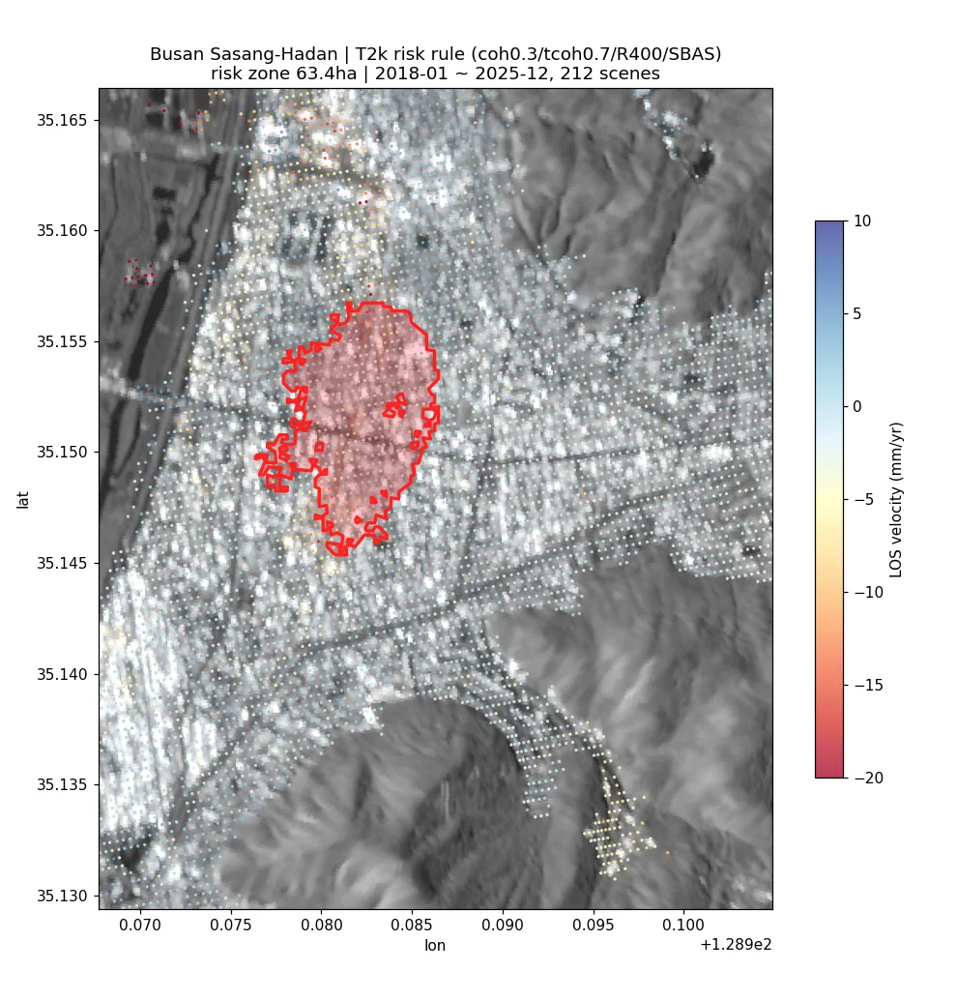
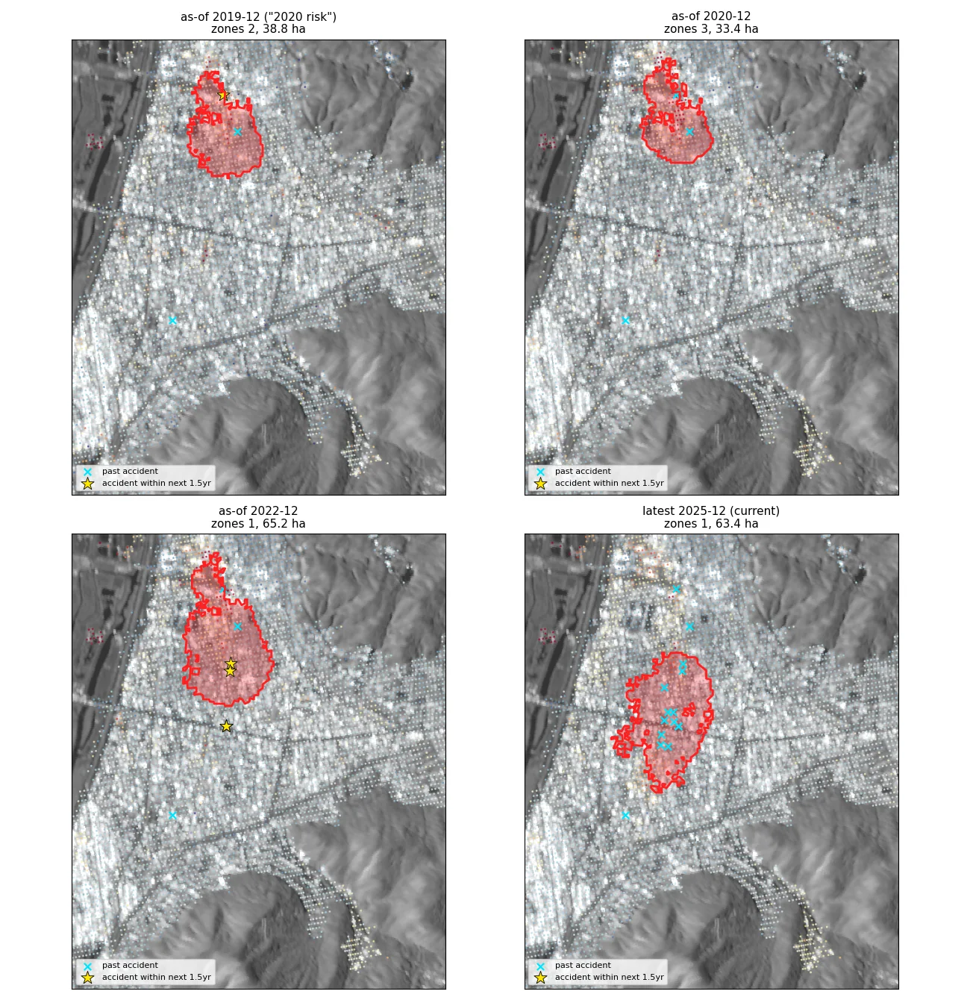
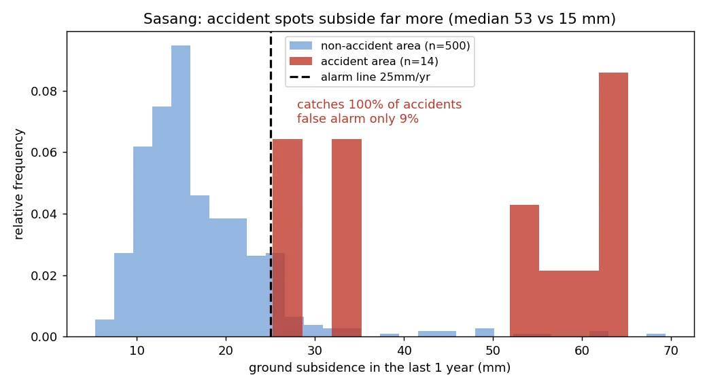
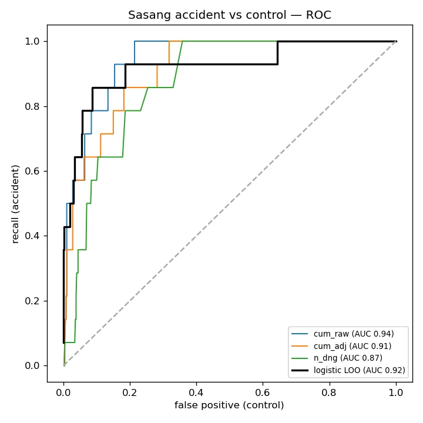
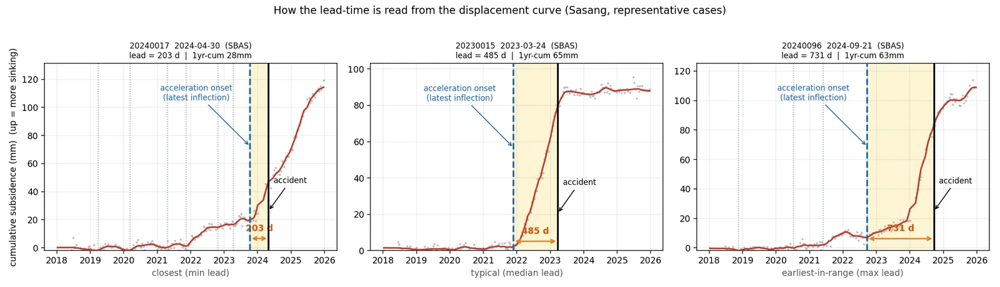
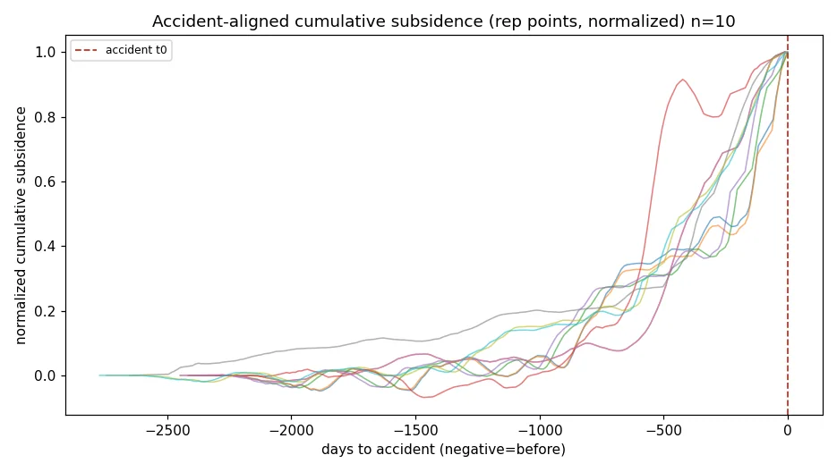
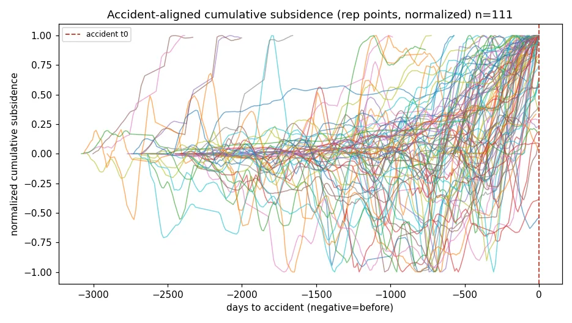
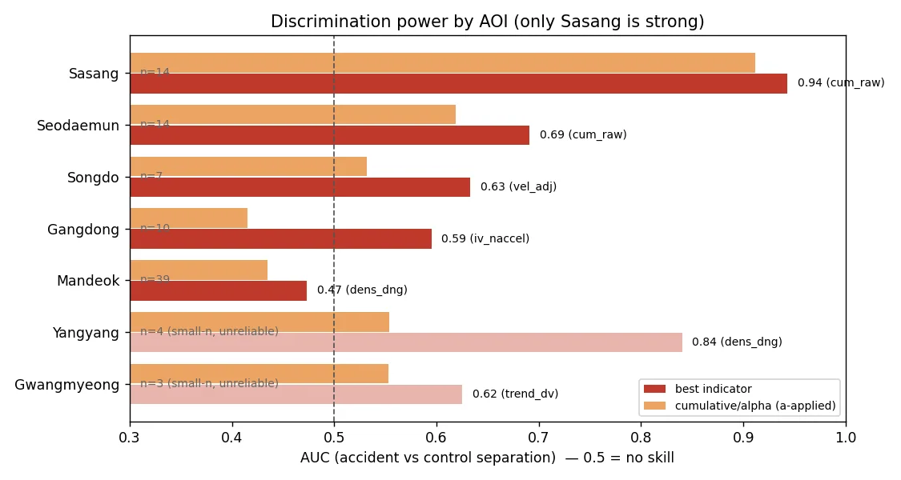
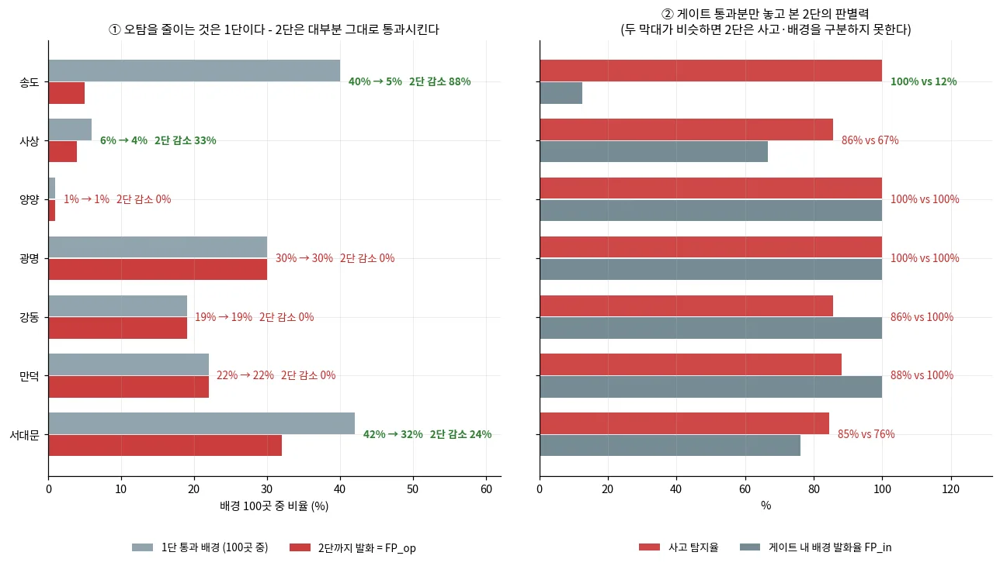
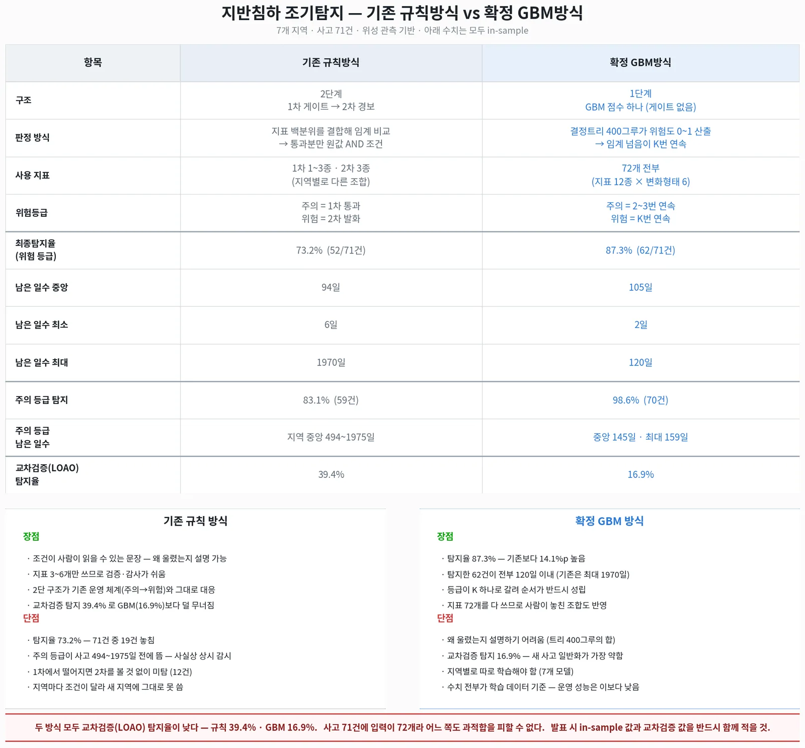

InSAR 기반 싱크홀(지반침하) 조기경보 — 위험 판정·리드타임 백테스트InSAR-based sinkhole early warning — risk rules and lead-time backtesting
Sentinel-1 PS/SBAS 변위에 시추공 지반등급과 국토안전관리원 지반침하 사고 원장(1,631건)을 결합해 '사고 전에 경보가 가능했나'를 백테스트함. 부산 사상~하단에서는 사고 지점이 확실히 더 많이 가라앉아 있었고(AUC 0.94) 위험구역 63.4 ha·점 등급 데모까지 만들었음. 무작위 대조군·LOAO·광역 확장에서는 판별력이 크게 떨어져, InSAR 단독 붕괴 예측은 안 된다는 결론도 함께 남겼음.Combined Sentinel-1 PS/SBAS displacement with borehole-based ground grades and a national ground-subsidence accident register (1,631 cases) to test whether warnings could have preceded collapses. In Busan Sasang, accident sites had clearly subsided more (AUC 0.94), leading to a 63.4 ha risk-zone map and a point-grading demo. Random-control, leave-one-accident-out and wide-area tests showed the skill largely disappears elsewhere, so InSAR alone cannot predict collapses.
배경 · 목표Background
- 국내 대형 손해보험사 PoC 과제: 공사현장·도심 지반침하(싱크홀) 위험을 위성으로 사전 경보할 수 있는지 검증.
- 대상 7개 AOI: 양성 5(서울 강동·서대문 연희동, 경기 광명, 강원 양양, 부산 사상~하단), 음성 2(인천 송도 매립지 압밀, 부산 만덕~센텀 대심도).
- 정답 데이터: 국토안전관리원 지하안전정보 Open API. 위경도가 전 건 0이라 VWorld+Kakao 지오코딩으로 1,602/1,631건(98.2%) 좌표 확보.
- 전제: 공동 성장·순간 붕괴는 InSAR로 직접 보이지 않음. 지표 침하·가속을 보조 신호로 씀.
- PoC for a major Korean P&C insurer: can satellites give advance warning of urban/construction-site ground subsidence (sinkholes)?
- Seven AOIs: five with sinkhole events (Seoul Gangdong and Yeonhui, Gwangmyeong, Yangyang, Busan Sasang–Hadan) and two negatives (Incheon Songdo reclaimed land, Busan Mandeok–Centum deep tunnel).
- Ground truth: the national underground-safety Open API. All coordinates were zero, so cases were geocoded with VWorld + Kakao (1,602 of 1,631, 98.2%).
- Premise: cavity growth and sudden collapse are not directly visible to InSAR; surface subsidence and acceleration are treated as auxiliary signals.
방법Method
- 지반등급 α: 시추공 92,307공 SPT N값으로 연약(0.6)·주의(0.8)·양호(1.0) 3등급, 공백(>500m)은 1:5만/1:25만 지질도로 보완.
- 1차 PoC: 속도·최근 2년 누적·2구간 추세 3지표×α, SBAS hotspot 스크리닝 → 반경 30m PS 확인 2단 결합.
- 융합 알람: 역속도법(Fukuzono) 붕괴예상시점 + DBSCAN(eps 100m) 클러스터 알람, 사고 이전 시점(as-of)으로 재현.
- 리드타임 규칙: SBAS(coh 0.3/tcoh 0.7/버퍼 400m) 워크포워드 12지표→72 파생(증가량·표준화), 1단 게이트(배경 대비 백분위·Youden) + 2단 경보(AND·K회 연속), 배경 30/100점으로 운영 오탐 산출.
- 검증: 무작위 비사고 지점 400곳 대조군, 사고 하나씩 빼는 LOAO, GBM 비교, 광역(사고 500/배경 3,000) 확장, 사고원인 실라벨 재계산.
- 데모: 언랩 간섭쌍 824개 → SBAS 6,250점×212에폭 역산 → 주소·기준일 입력 시 정상/주의/위험 판정과 위험구역 GeoJSON.
- Ground factor α: SPT N-values from 92,307 boreholes give soft (0.6) / caution (0.8) / good (1.0); gaps >500 m filled from 1:50k/1:250k geological maps.
- First PoC: velocity, last-2-year cumulative and two-segment trend indicators scaled by α; SBAS hotspot screening followed by PS confirmation within 30 m.
- Fusion alarms: inverse-velocity (Fukuzono) failure-time estimate plus DBSCAN (eps 100 m) cluster alarms, replayed as-of before each event.
- Lead-time rules: walk-forward SBAS series (coh 0.3 / tcoh 0.7 / 400 m buffer), 12 indicators expanded to 72 (increments, z-scores); stage-1 gate on background percentiles (Youden threshold) and stage-2 AND alarm with K consecutive epochs; operational false-alarm rate on 30/100 background points.
- Validation: 400 random non-accident control points, leave-one-accident-out (LOAO), GBM comparison, wide-area extension (500 accidents / 3,000 background), re-labelling with the official cause field.
- Demo: 824 unwrapped pairs → SBAS inversion (6,250 points × 212 epochs) → normal/caution/danger grade and risk-zone GeoJSON from an address and a reference date.
결과Results
- 1차 PoC: 양성 5건 전부 사고 이전 위험 등급(평균 리드 1,399일). 연희동은 SBAS 버퍼가 정상이라 PS 확인 단계로만 탐지 — 2단 결합이 recall의 핵심.
- 융합 알람: 양성 4/5 탐지(연희동 미탐, 최근접 알람 226m), AOI 내 사고 리스트 70/81건(86%) 선행. 단 음성 AOI에도 알람 클러스터 353개.
- 부산 사상: 사고 지점 최대 누적침하 중앙 72.5mm vs 대조 20.6mm, AUC 0.94. 2023년 이후 사고 12건 모두 현재 위험구역(63.41 ha) 안.
- 사상 점 등급: 1단 AUC 0.962(14/14 통과), 2단 경보 탐지 85.7%(12/14), 중앙 리드 44일(12~1,204일), 배경 오탐 2/30(배경 100점 기준 4%).
- 데모 성능: 라이브 SBAS 6.5초·전체 10초, 운영본과 6,250점 속도차 0.0000 mm/yr.
- First PoC: all five event AOIs reached a danger grade before the event (mean lead 1,399 days). Yeonhui was caught only by the PS confirmation stage, since its SBAS buffer stayed normal.
- Fusion alarms: 4 of 5 events detected (Yeonhui missed, nearest alarm 226 m); 70 of 81 listed accidents inside the AOIs (86%) preceded by an alarm. Negative AOIs still produced 353 alarm clusters.
- Busan Sasang: median maximum cumulative subsidence near accidents was 72.5 mm vs 20.6 mm at controls (AUC 0.94); all 12 accidents since 2023 fall inside the current 63.41 ha risk zone.
- Sasang point grading: stage-1 AUC 0.962 (14/14 pass), stage-2 detection 85.7% (12/14), median lead 44 days (range 12–1,204), background false alarms 2/30 (4% on 100 points).
- Demo: live SBAS in 6.5 s, end-to-end 10 s; identical to the production run at all 6,250 points (velocity difference 0.0000 mm/yr).










배운 점 · 한계What I learned · Limitations
- 버퍼 최대값 방식은 위치를 못 짚는다: 전국 140건 탐지율 79.3% vs 무작위 대조군 82.5%. 도심 광역침하를 반영할 뿐임. 7 AOI 밖 1,455건(91%)은 관측 범위 밖이었음.
- 침하 ≠ 붕괴: 음성 송도 경보점 가속도 중앙 13.1 mm/yr²가 양성 1.6보다 컸음. 가속·시계열 형상 단일 임계로 발생/미발생을 분리할 수 없었음.
- 판별력은 지역에 묶여 있다: 사상 AUC 0.94, 서대문 0.69, 강동 0.59, 만덕 0.47. 광역(사고 500건)에서는 게이트 AUC 0.637, 탐지 80% 운용점 오탐 60.9%로 일반 규칙이 성립하지 않았음.
- in-sample 수치는 낙관적이다: 사고에서 임계를 뽑은 규칙의 탐지율이 LOAO에서 39.4%(규칙)·16.9%(GBM)로 떨어졌음. 2단 경보는 대부분 지역에서 오탐을 줄이지 못했다(강동·만덕·광명·양양 감소 0%).
- 라벨을 의심할 것: 복구방법 문구로 추정한 사고원인이 API 실제 값과 93건 중 55건(59%) 달랐고, '굴착공사형' 상품 근거(AUC 0.968)는 실라벨·사전확정 조건에서 AUC 0.509(무작위)·오탐 59.5%였음.
- 같은 규칙의 리드 원장이 파생지표 계산 순서에 따라 44일 vs 61.5일로 달라졌음. 데모용 '탐지 100%·421.8일'(위험구역 규칙)과 '85.7%·44일'(점 등급)은 서로 다른 규칙이라 섞으면 안 됨.
- 지하수(GIMS) 융합은 과거 수위 API 미인가, 도심 AOI 5곳 관측정 0개로 설계에서 뺐음.
- Buffer-maximum scoring does not localize accidents: 79.3% 'detection' for 140 accidents vs 82.5% for 400 random controls. It mostly reflects city-wide subsidence. 1,455 of 1,595 accidents (91%) were outside the InSAR footprint.
- Subsidence is not collapse: at negative Songdo the median acceleration of alarmed points (13.1 mm/yr²) exceeded that of event sites (1.6). No single acceleration or curve-shape threshold separated events from non-events.
- Skill is local: AUC 0.94 in Sasang but 0.69 Seodaemun, 0.59 Gangdong, 0.47 Mandeok. In the wide-area test (500 accidents) the gate AUC was 0.637 and false alarms reached 60.9% at 80% detection, so no general rule emerged.
- In-sample numbers are optimistic: thresholds drawn from accidents dropped to 39.4% (rules) and 16.9% (GBM) detection under LOAO. The stage-2 alarm did not reduce false alarms in most regions (0% reduction in four of seven).
- Question the labels: causes inferred from repair notes disagreed with the official cause field in 55 of 93 cases (59%), and an 'excavation-only' product idea (AUC 0.968) fell to AUC 0.509 with 59.5% false alarms under the real labels and a pre-fixed configuration.
- The same rule gave a 44- or 61.5-day median lead depending on when derived features were computed. The demo's '100% / 421.8 days' (zone rule) and '85.7% / 44 days' (point grade) are different rules and should not be mixed.
- Groundwater (GIMS) fusion was dropped: historical levels were not authorized via the API, and five urban AOIs had no national monitoring well.
관련 코드Code
저장소는 센서 → 위성 → 기법 순으로 정리돼 있고, 각 폴더에 입력·출력 표가 있음.The repository is organised by sensor, satellite and technique; each folder documents its inputs and outputs.
산출물Deliverables
- 사상~하단 위험구역 GeoJSON·위험점수 래스터·SBAS 관측점(원자료, 번들 제외)
- 주소+기준일 → 정상/주의/위험 점 등급 데모와 개발자 전달본
- 리드타임 재계산 반출본(워크포워드 지표 npz + selftest + README)
- 전국 지반침하 사고 원장 수집·지오코딩 파이프라인(1,631건)
- 7개 AOI 통합 인터랙티브 지도(HTML, 지역당 100~160MB)
- Sasang–Hadan risk-zone GeoJSON, risk-score raster and SBAS points (raw data, not bundled)
- Address + date → normal/caution/danger point-grading demo and developer handover package
- Lead-time recomputation package (walk-forward indicator npz, self-test, README)
- Collection and geocoding pipeline for the national ground-subsidence accident register (1,631 cases)
- Interactive maps for the seven AOIs (HTML, 100–160 MB each)
원본 보고서와 발표자료는 사내 자료로 공개하지 않음. 분석 코드는 GitHub에 정리되어 있음.Source reports and decks are internal and not published here. Analysis code is organised on GitHub.